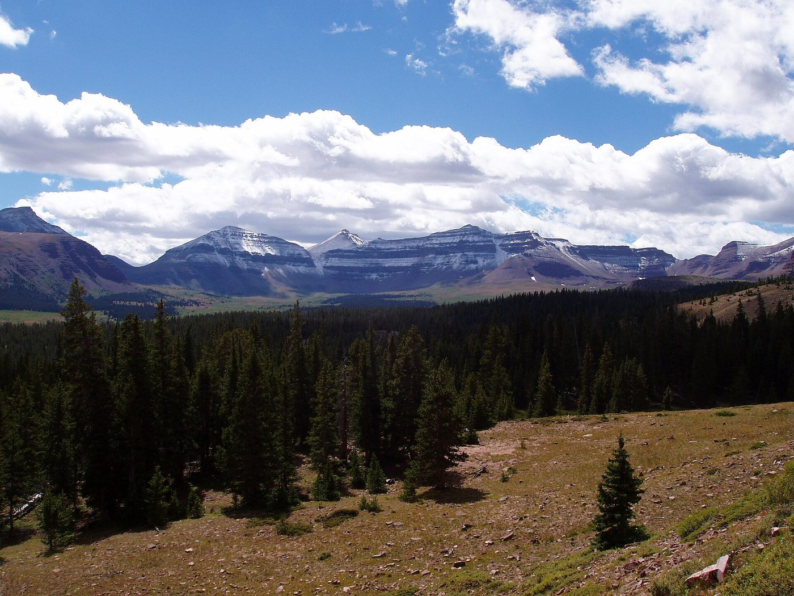
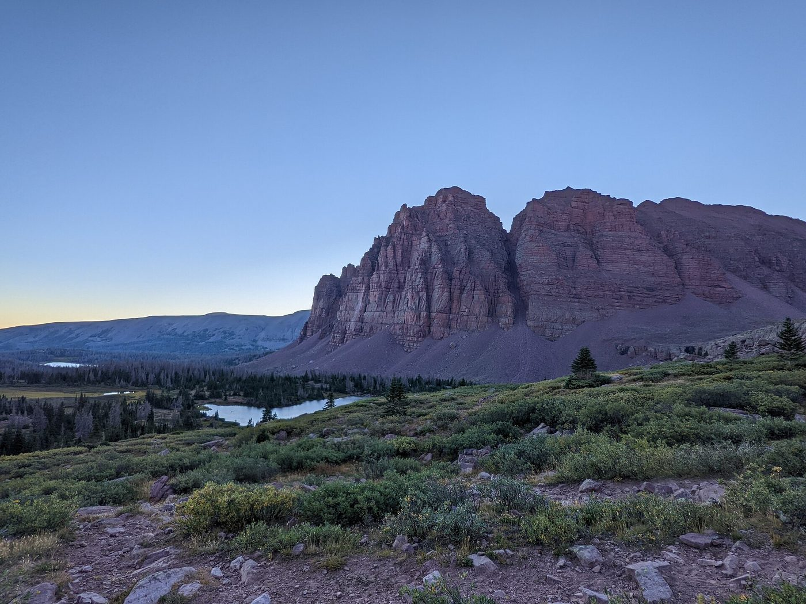

How to read the badges: LIVE means the fact was read from a public web page on 28 October 2026. EST means it is an estimate or general knowledge, so please verify it before relying on it. Prices come from public airline, route, and hotel pages. They are not date-specific and will change when you search your exact dates.
Recommendation
Go in summer: about 9–18 August 2027. This is the only season when you can reach Kings Peak, the High Uintas lakes, and all of Mirror Lake Highway. Kings Peak is best from mid-July to early September, and mid-August is the best week LIVE.
Alternative: 19–28 November 2026. This fits between your Boston trip (ending 18 November) and your possible 1 December departure from Israel. It is a different trip. You can drive and snowshoe near the range, but you cannot enter the High Uintas. Thanksgiving is 26 November, which will raise fares. Dinosaur National Monument's fossil hall is closed that day.
The one decision for Tom: summer 2027 (recommended), or the snow version on 19–28 November 2026?

Photo: Hkw2 at English Wikipedia, CC BY-SA 3.0, via Wikimedia Commons.
How the seasons differ
| Summer (July–September) | Late November | |
|---|---|---|
| Mirror Lake Highway (Utah 150, also called SR-150) | Open. In 2026 it reopened 22 May LIVE. | Closed at the Soapstone gate when snow requires it LIVE. Today the Utah Department of Transportation (UDOT) lists it "open until further notice" LIVE. UDOT says closures typically start in November LIVE. Expect it closed by 19 November EST. |
| Kings Peak and the High Uintas | Open. | Heavy snow, frozen lakes, and avalanche risk. Not recommended LIVE. |
| Flaming Gorge | Full services. | The Red Canyon Visitor Center closed for the season on 16 October 2026 LIVE. The Sheep Creek loop is usually closed in winter LIVE. The main scenic byway stays open LIVE. |
| Dinosaur National Monument | Open. | The Quarry Exhibit Hall is open 10 AM–4 PM from 1 December to 28 February LIVE. November hours were not confirmed, so check them EST. |
| Weather | Warm days, cold nights, afternoon thunderstorms LIVE. | Kamas averages 34°F in November, with about 13 inches of snow. Vernal averages 33°F LIVE. |
Day by day: summer version (9–18 August 2027)
- Fly to Salt Lake City (SLC). Take a morning nonstop from BWI or IAD. Pick up the rental car. Drive to Kamas or Heber, about 1 hour to 1 hour 15 minutes EST. From SLC, Park City is 40–55 minutes and Heber is 50–65 minutes LIVE. Sleep at low elevation to begin adjusting to altitude.
- Mirror Lake Highway, easy day. Stop at Provo River Falls, Mirror Lake, and Bald Mountain Pass. Hike the short Bald Mountain trail, which reaches about 11,900 feet EST. Sleep in Kamas or Heber.
- Lofty Lake Loop or Trial Lake. These are moderate day hikes or fishing stops EST. Sleep in Kamas.
- Drive over Utah 150 to Evanston, Wyoming (about 1 hour 45 minutes EST). Continue to Mountain View, Wyoming, about 45 more minutes EST. Stay there.
- Backpack from the Henrys Fork trailhead (9,400 feet) toward Dollar Lake. Camp there.
- Summit Kings Peak (13,528 feet). The full route is about 28 miles round trip with about 5,500 feet of climbing. It is very strenuous LIVE. Start early and be down before afternoon storms.
- Hike out. Drive to Vernal through Flaming Gorge, about 3 hours EST.
- Flaming Gorge. Visit the dam, the Red Canyon overlook, and the Sheep Creek Geological Loop. Add the Red Cloud Loop if you have time. Details of the Red Cloud Loop were not verified.
- Dinosaur National Monument, about 20 minutes from Vernal LIVE. See the Quarry Exhibit Hall.
- Drive Vernal to SLC: 173–178 miles, 3 to 3.5 hours LIVE. Take an afternoon or evening nonstop home. Leave 3 hours before the flight.
If you skip the Kings Peak overnight, use days 4–6 for the Bear River area, the Evanston side, and more lake hikes. Camping gear is hard to carry on a plane. The place name "Moffat" from the original request could not be verified, so it is not in the plan.

Photo: Glennfcowan, CC BY 3.0, via Wikimedia Commons.

Photo: Glennfcowan, CC BY 3.0, via Wikimedia Commons.
Day by day: snow version (19–28 November 2026)
- Fly to SLC. Drive to Park City or Heber in an all-wheel-drive rental.
- Snowshoe or cross-country ski on the Mirror Lake Highway winter corridor. The road is plowed from Kamas to the Soapstone gate, about 15 miles. Past the gate it is groomed for skiers and snowmobiles LIVE. Beaver Creek is the main groomed cross-country route. Yellow Pine and Shingle Creek are snowshoe trailheads LIVE. Check the grooming report first LIVE.
- Second day on the winter corridor. Go early in the morning, before snowmobiles are out.
- Park City. Cross-country skiing or snowshoeing, and time in town.
- Drive to Vernal (about 3 hours EST).
- Dinosaur National Monument. Check the Quarry hall's November hours first. Drive the main Flaming Gorge scenic byway only.
- Spare day. Use it for weather delays or a rest day.
- Return to the Wasatch side for more snowshoeing, or end the trip early.
- Spare day. Another weather buffer.
- Fly home from SLC.
On snow days, carry chains or traction devices, water, and a full fuel tank. Cell coverage ends a few miles above Kamas LIVE. The winter version above the gate has no plow, no help nearby, and no quick way out LIVE.
Base towns and drive times
- Kamas is the closest town to Mirror Lake Highway. Heber, 50–65 minutes from SLC, is also close LIVE.
- Park City is a good winter base. Heber to Park City is about 25 minutes, or 30–40 minutes in winter LIVE.
- Mountain View or Evanston, Wyoming is the closest base to the Kings Peak trailhead.
- Vernal is the base for Dinosaur National Monument and Flaming Gorge.
- Kings Peak is about 215 miles and about 4 hours from SLC. The road goes through Wyoming on I-80 and US-191 LIVE.

Photo: DimiTalen, CC0, via Wikimedia Commons.
Flights (cheapest sensible fare, domestic)
These come from public airline and route pages. They are not searches for specific dates. Check your dates on the airline sites.
- BWI to SLC: Southwest flies nonstop daily. Basic fares show from $149 one way, with a range of $149–$626, seen within the last 24 hours LIVE. Delta also flies BWI to SLC nonstop, with listed round trips from about $269–$295 LIVE. Typical round trips are $325–$600 on Delta and $305–$540 on Southwest LIVE.
- IAD to SLC: Delta and United both fly nonstop. On 28 October, Delta DL 432 left at 6:13 AM and United UA 2410 left at 6:00 PM LIVE. Round trips start around $337 on Delta and $357 on United LIVE. The flight takes about 4 hours 40 minutes to 5 hours.
- Cheaper but slower: Frontier and Spirit show cheaper one-stop fares LIVE.
- Budget: about $300–$450 round trip for a nonstop EST. January is the cheapest month and June the most expensive LIVE.
- Using United miles: Delta and United nonstops from IAD are the best fit.
Rental car
- Summer: any car works on paved roads. The Henrys Fork gravel road is fine for a regular car when dry. A high-clearance vehicle is better after rain LIVE.
- Winter: rent an all-wheel-drive or four-wheel-drive vehicle. Utah can require traction devices EST. A Kamas cabin listing also says all-wheel drive is required in winter LIVE.
- Price: about $50–$90 per day in summer EST. No live price was found.
Lodging, approximate price per night
- Vernal: Dinosaur Inn & Suites about $115, Holiday Inn Express about $113–$132 LIVE. The Vernal average is about $167 on weeknights and $195 on weekends, highest in September LIVE.
- Heber City: Holiday Inn Express from $135, Best Western Plus from $174 LIVE.
- Park City in winter: Newpark Resort and Hyatt Place from $199 LIVE.
- Kamas cabins: Bear River Lodge starts at $299 for a studio LIVE. Another Kamas cabin is $471 and up LIVE.
- Mountain View and Evanston: not checked. Budget about $90–$150 EST.
- Camping is the cheapest summer option but needs gear.
Permits and fees
- High Uintas Wilderness: no advance permit LIVE. Overnight visitors sign in at the trailhead kiosk LIVE.
- Henrys Fork trailhead pass: $10 for 3 days, $20 for 7 days, $60 for the season. An America the Beautiful pass also works LIVE.
- Mirror Lake Highway fee sites: a recreation pass is required LIVE.
- Dinosaur National Monument: $25 per vehicle for 7 days. Annual pass $45 LIVE.
- Flaming Gorge: no entrance fee. A use pass is needed at major boat launches and Little Hole Trail LIVE.
- Fishing: a state fishing license is needed EST.

Photo: Derrellwilliams, CC BY-SA 4.0, via Wikimedia Commons.
Safety
- Altitude: the high trail passes and Kings Peak are above 11,000 feet. Spend days 1–3 at low and moderate elevation. Drink water and watch for headache or nausea. Go down if symptoms get worse EST.
- Weather: summer afternoon thunderstorms are common. Reach the summit before noon LIVE.
- Fire: prescribed fires are planned along SR-150 through November, so there may be smoke LIVE.
- Winter: avalanche terrain exists above the basins. Do not go past the gate without proper equipment LIVE.
- Check current road status on UDOT Traffic and the Forest Service road conditions page before each drive.
Carry-on packing list
- Layers: base layer, fleece, light down jacket, rain shell.
- Hiking shoes or boots (wear them on the plane), wool socks, hat, gloves, sun hat.
- Sunscreen, sunglasses, headlamp, water bottle or filter. Liquids over 3.4 ounces and knives do not go in a carry-on bag.
- Winter additions: warm hat, insulated gloves, microspikes (metal traction devices for shoes). Snowshoes and skis can be rented.
- Buy in Utah, do not fly with: fuel canisters and bear spray. Rent or buy a tent, sleeping bag, and pack if you do the Kings Peak overnight.
More photos from the trip area

Photo: Ricardo630, CC BY-SA 4.0, via Wikimedia Commons.

Photo: Drake411, CC BY-SA 3.0, via Wikimedia Commons.
Sources
- UDOT Seasonal Roads page (October 2026) and UDOT's 22 May 2026 reopening notice.
- Forest Service pages: Henrys Fork Trailhead, High Uintas Wilderness, forest road conditions, Heber-Kamas Ranger District.
- Utah Nordic Alliance and Utah snow grooming report for Mirror Lake Highway.
- Flight route pages from Southwest, Google Flights, Expedia, and Kayak.
- National Park Service: Dinosaur National Monument hours and fees. Visit Utah and Ashley National Forest pages for Flaming Gorge.
- Hotel listing pages for Vernal, Heber City, Park City, and Kamas. Climate data pages for Kamas, Vernal, and Flaming Gorge.
- Kings Peak trail guides for season and route details.
- Photos: Wikimedia Commons, with author and license under each photo.